已发布浏览器游戏
《浪尖学园：逆流协议》已上线试玩，包含剧情、关卡、Boss、存档与完整交互。
个人作品集 · 2026
自然生长 × 数字创造
向下探索
01 / 亮点
先让访客快速知道：你不是只写想法，而是真的做过东西，并且还在继续长出来。
《浪尖学园：逆流协议》已上线试玩，包含剧情、关卡、Boss、存档与完整交互。
初级与高级两张证书作为学习记录，后续可继续扩展新的 AI / 开发 / 比赛认证。
使用 Codex、Trae、ChatGPT、Gemini，把想法推进成可运行项目。
系统学习演示设计，用 AI 提升速度，由自己把控结构、视觉和最终质量。
中药学带来植物和生长的视觉根系，AI 与开发提供数字创造的另一半。
02 / 关于
你好，我是王果典。
一个喜欢尝试新东西，也喜欢把想法真正做出来的人。
乐观、积极、乐于助人，愿意尝试新鲜事物，也愿意把想法推进成真正能被打开、能被体验的作品。
熟悉 Codex、Trae、ChatGPT、Gemini 等 AI 工具，也能用 HTML、CSS、JavaScript 完成完整交互。
成长不是装成什么都会，而是持续把好奇心变成新的项目、新的协作和新的能力。
03 / 项目
一些已经变成现实，以及仍在生长中的想法。
已经发布的作品，和仍在继续生长的实验。
WGD // 项目档案
在 23:59:59 之前，突破七重防火墙。
用剧情画面、角色对话和系统警报推进赛博悬疑故事。
战术冲刺、穿甲重炮、折射盾、EMP 与全域过载构成战斗节奏。
原生 HTML / CSS / JavaScript，包含本地存档、关卡选择与剧情配置。
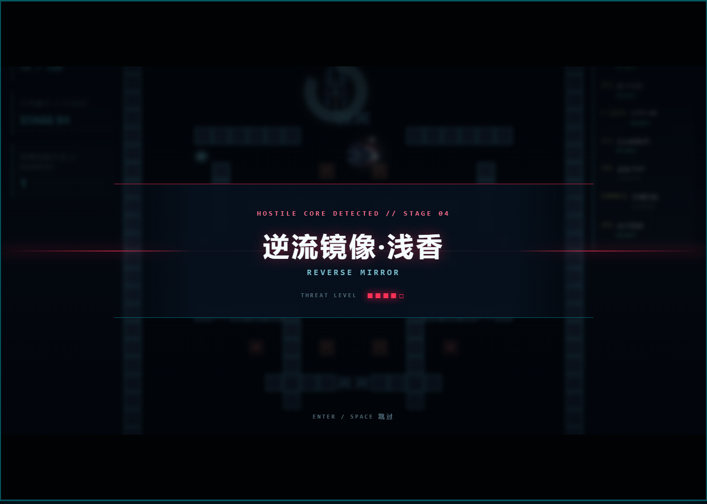
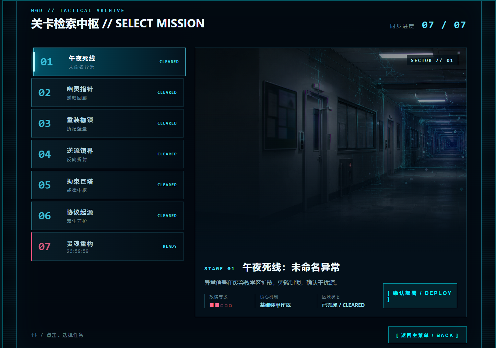
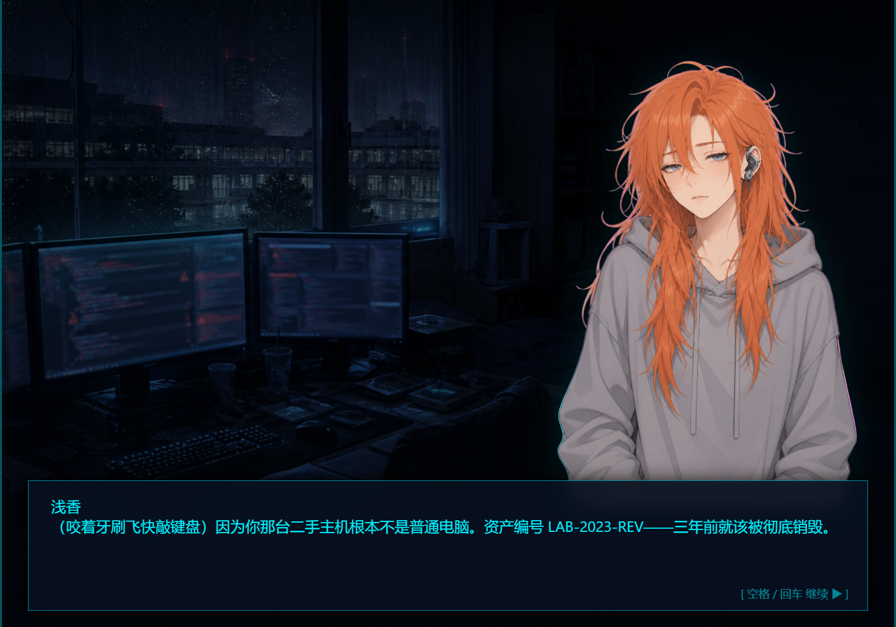
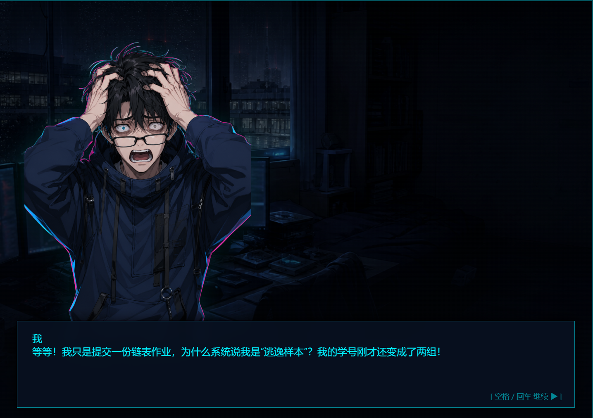
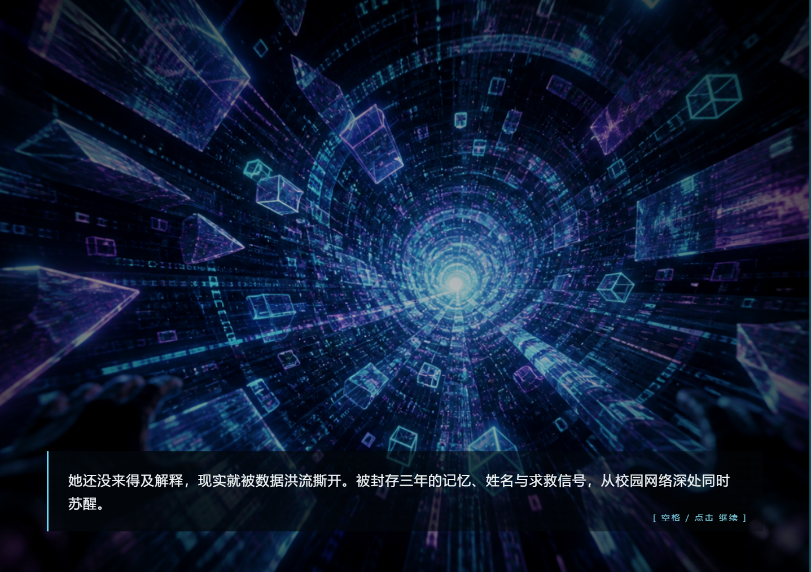
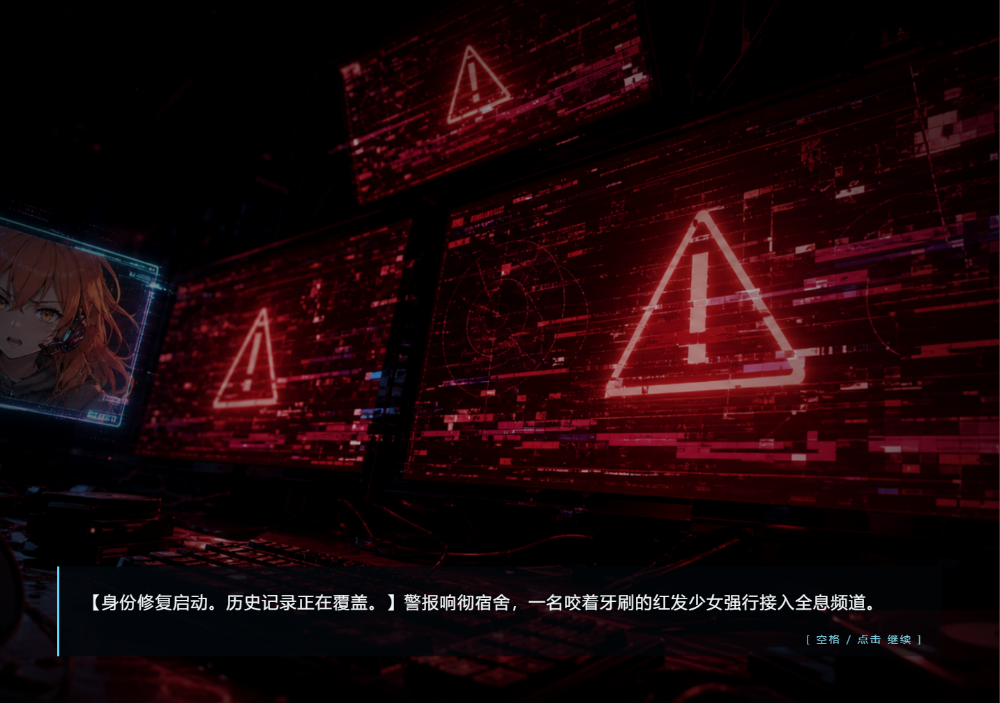
项目 / 开发中 / 私有
一个关于记忆、人格、情绪与长期关系的 AI 陪伴软件实验。
不展示未成熟 UI，用已经确定的项目封面表达它正在生长的方向。
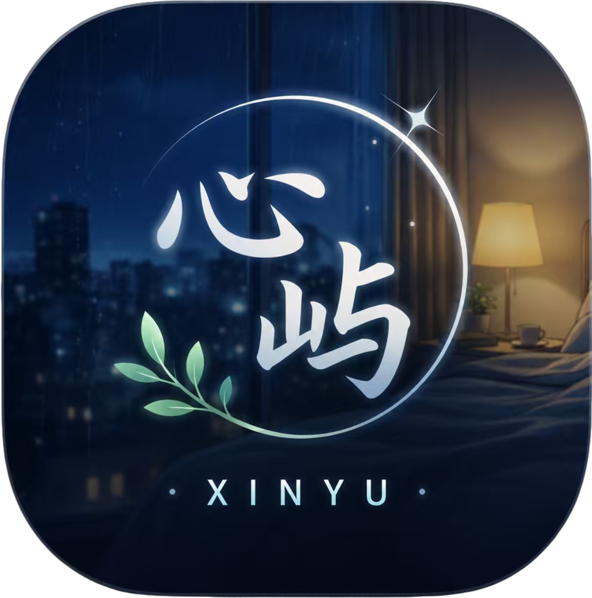
04 / 建造与创造
我喜欢的不只是学习工具，而是用它们把想法变成东西。
Codex · Trae · ChatGPT · Gemini · HTML · CSS · JavaScript
AI 提升效率，自己把控质量。
系统学习过演示设计，能够结合 AI 进行资料整理、内容辅助和制作提效，并由自己负责信息结构、视觉呈现以及最终质量。
05 / 学习经历
中药学 · 本科
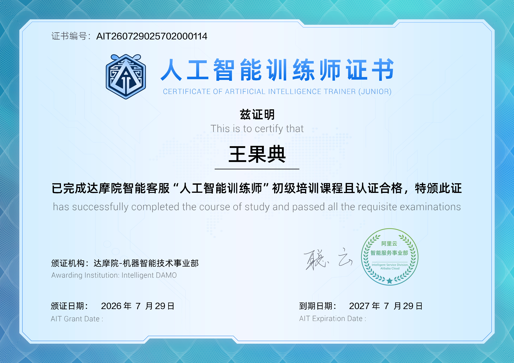
2026颁证日期 2026.07.29 · 有效期至 2027.07.29
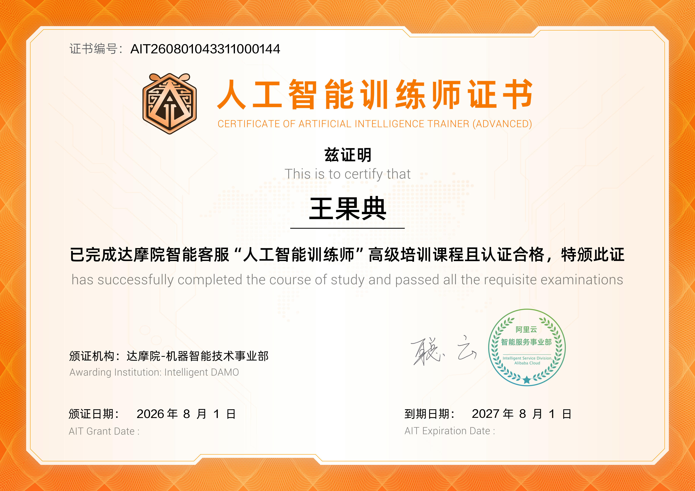
2026颁证日期 2026.08.01 · 有效期至 2027.08.01
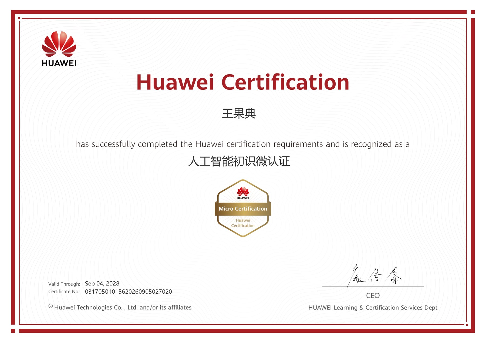
2026AI 基础认知与入门学习记录。
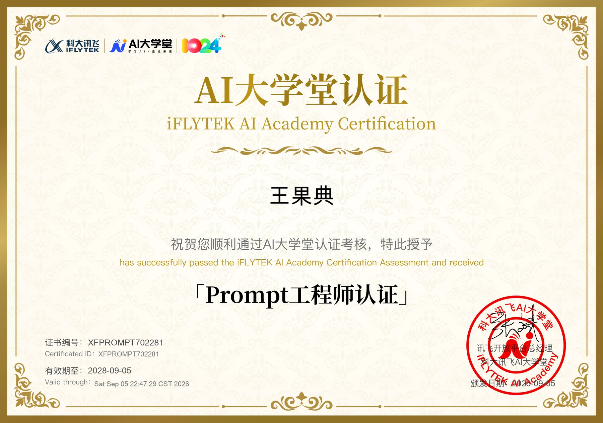
2026科大讯飞 AI 大学堂认证。
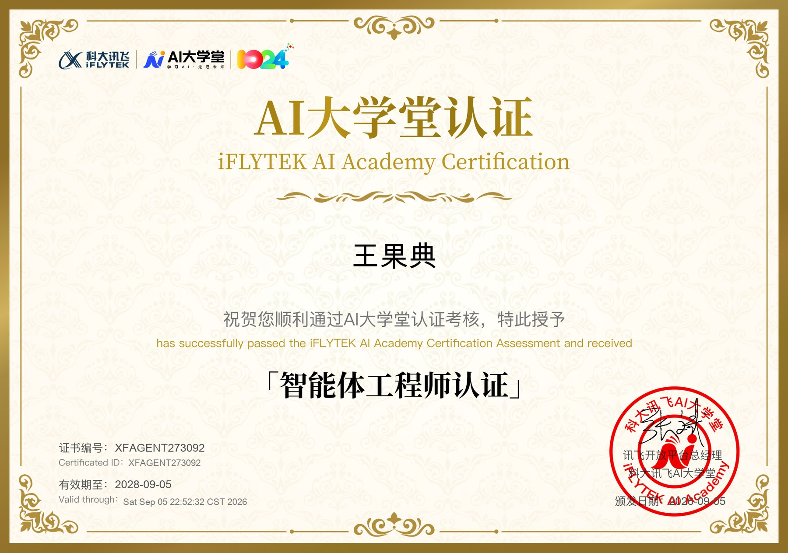
2026科大讯飞 AI 大学堂认证。
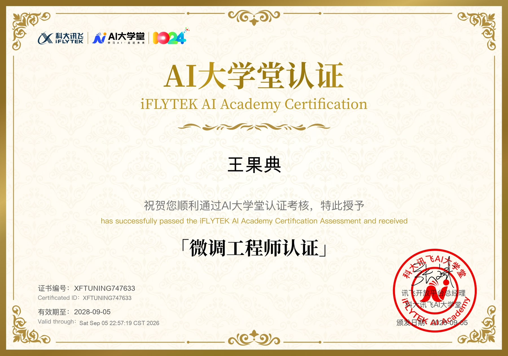
2026科大讯飞 AI 大学堂认证。
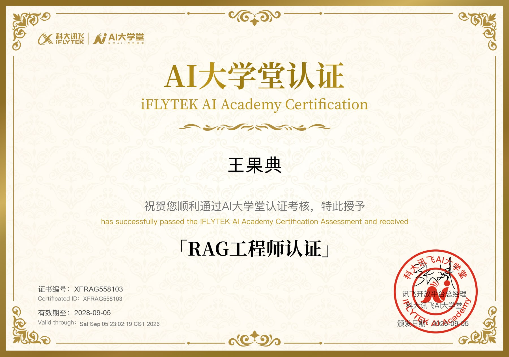
2026科大讯飞 AI 大学堂认证。
学习中药学。
探索人工智能。
06 / 联系
一起把想法做出来。